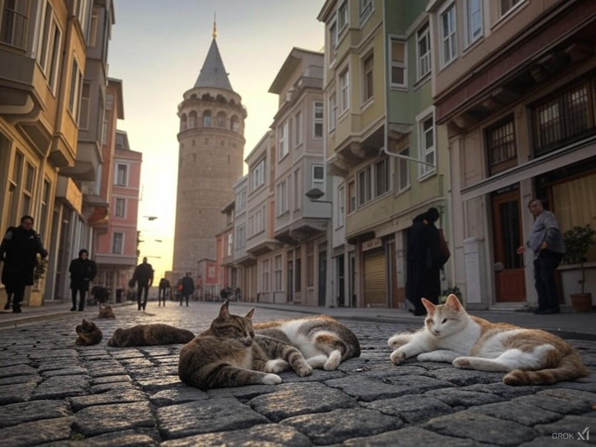

İstanbul, hem Doğu ile Batı’yı birleştiren eşsiz bir şehir olmasıyla hem de kedileriyle ünlüdür. ? Şehrin tarihi sokaklarında dolaşırken, her köşede bir kedi görmek mümkündür. ? Bu kediler, İstanbul’un kültürel ve sosyal dokusunun bir parçasıdır. ? Yerel halk ve turistler, kedilere büyük ilgi gösterir. ? İnsanlar, kedilere yiyecek verir, onları sever ve hatta bazen evlerine alır. ? Şehirde kedilere adanmış kafeler bile bulunmaktadır. ? İstanbul kedileri, fotoğrafçılara, yazarlara ve sanatçılara ilham kaynağı olmuştur. ?
Kedi
Cat
Sokak
Street
Deniz
Sea
Şehir
City
İlham
Inspiration
Sanatçı
Artist
Turist
Tourist
Halk
Public
Kültür
Culture
Doku
Texture
Fotoğraf
Photo
Yazar
Writer
Sevmek
To love
Yemek
Food
Ev
House
Cafe
Cafe
Sanat
Art
Bağlantı
Connection
Eşsiz
Unique
Tarih
History